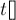

MAXimal
добавлено: 10 Jun 2009 21:03
редактировано: 28 Oct 2015 22:35
Содержание [скрыть]
Нахождение пары ближайших точек
Постановка задачи
Даны  точек
точек  на плоскости, заданные своими координатами
на плоскости, заданные своими координатами  . Требуется найти среди них такие две точки, расстояние между которыми минимально:
. Требуется найти среди них такие две точки, расстояние между которыми минимально:
Расстояния мы берём обычные евклидовы:
Тривиальный алгоритм — перебор всех пар и вычисление расстояния для каждой — работает за  . Ниже описывается алгоритм, работающий за время
. Ниже описывается алгоритм, работающий за время  . Этот алгоритм был предложен Препаратой (Preparata) в 1975 г. Препарата и Шамос также показали, что в модели дерева решений этот алгоритм асимптотически оптимален.
. Этот алгоритм был предложен Препаратой (Preparata) в 1975 г. Препарата и Шамос также показали, что в модели дерева решений этот алгоритм асимптотически оптимален.
Алгоритм
Построим алгоритм по общей схеме алгоритмов "разделяй-и-властвуй": алгоритм оформляем в виде рекурсивной функции, которой передаётся множество точек; эта рекурсивная функция разбивает это множество пополам, вызывает себя рекурсивно от каждой половины, а затем выполняет какие-то операции по объединению ответов. Операция объединения заключается в обнаружении случаев, когда одна точка оптимального решения попала в одну половину, а другая точка — в другую (в этом случае рекурсивные вызовы от каждой из половинок отдельно обнаружить эту пару, конечно, не смогут). Основная сложность, как всегда, заключается в эффективной реализации этой стадии объединения. Если рекурсивной функции передаётся множество из точек, то стадия объединения должна работать не более, чем  , тогда асимптотика всего алгоритма
, тогда асимптотика всего алгоритма  будет находиться из уравнения:
будет находиться из уравнения:
Решением этого уравнения, как известно, является .
Итак, перейдём к построению алгоритма. Чтобы в будущем прийти к эффективной реализации стадии объединения, разбивать множество точек на два будем согласно их  -координатам: фактически мы проводим некоторую вертикальную прямую, разбивающую множество точек на два подмножества примерно одинаковых размеров. Такое разбиение удобно произвести следующим образом: отсортируем точки стандартно как пары чисел, т.е.:
-координатам: фактически мы проводим некоторую вертикальную прямую, разбивающую множество точек на два подмножества примерно одинаковых размеров. Такое разбиение удобно произвести следующим образом: отсортируем точки стандартно как пары чисел, т.е.:
Тогда возьмём среднюю после сортировки точку (), и все точки до неё и саму отнесём к первой половине, а все точки после неё — ко второй половине:
Теперь, вызвавшись рекурсивно от каждого из множеств  и , мы найдём ответы и для каждой из половинок. Возьмём лучший из них: .
и , мы найдём ответы и для каждой из половинок. Возьмём лучший из них: .
Теперь нам надо произвести стадию объединения, т.е. попытаться обнаружить такие пары точек, расстояние между которыми меньше  , причём одна точка лежит в , а другая — в . Очевидно, что для этого достаточно рассматривать только те точки, которые отстоят от вертикальной прямой раздела на расстояние, меньшее , т.е. множество
, причём одна точка лежит в , а другая — в . Очевидно, что для этого достаточно рассматривать только те точки, которые отстоят от вертикальной прямой раздела на расстояние, меньшее , т.е. множество  рассматриваемых на этой стадии точек равно:
рассматриваемых на этой стадии точек равно:
Для каждой точки из множества надо попытаться найти точки, находящиеся к ней ближе, чем . Например, достаточно рассматривать только те точки, координата  которых отличается не более чем на . Более того, не имеет смысла рассматривать те точки, у которых -координата больше -координаты текущей точки. Таким образом, для каждой точки определим множество рассматриваемых точек следующим образом:
которых отличается не более чем на . Более того, не имеет смысла рассматривать те точки, у которых -координата больше -координаты текущей точки. Таким образом, для каждой точки определим множество рассматриваемых точек следующим образом:
Если мы отсортируем точки множества по -координате, то находить будет очень легко: это несколько точек подряд до точки .
Итак, в новых обозначениях стадия объединения выглядит следующим образом: построить множество , отсортировать в нём точки по -координате, затем для каждой точки рассмотреть все точки , и каждой пары посчитать расстояние и сравнить с текущим наилучшим расстоянием.
На первый взгляд, это по-прежнему неоптимальный алгоритм: кажется, что размеры множеств будут порядка , и требуемая асимптотика никак не получится. Однако, как это ни удивительно, можно доказать, что размер каждого из множеств есть величина  , т.е. не превосходит некоторой малой константы вне зависимости от самих точек. Доказательство этого факта приведено в следующем разделе.
, т.е. не превосходит некоторой малой константы вне зависимости от самих точек. Доказательство этого факта приведено в следующем разделе.
Наконец, обратим внимание на сортировки, которых вышеописанный алгоритм содержит сразу две: сначала сортировка по парам (,), а затем сортировка элементов множества по . На самом деле, от обеих этих сортировок внутри рекурсивной функции можно избавиться (иначе бы мы не достигли оценки для стадии объединения, и общая асимптотика алгоритма получилась бы ). От первой сортировки избавиться легко — достаточно предварительно, до запуска рекурсии, выполнить эту сортировку: ведь внутри рекурсии сами элементы не меняются, поэтому нет никакой необходимости выполнять сортировку заново. Со второй сортировкой чуть сложнее, выполнить её предварительно не получится. Зато, вспомнив сортировку слиянием (merge sort), которая тоже работает по принципу разделяй-и-властвуй, можно просто встроить эту сортировку в нашу рекурсию. Пусть рекурсия, принимая какое-то множество точек (как мы помним, упорядоченное по парам  ) возвращает это же множество, но отсортированное уже по координате . Для этого достаточно просто выполнить слияние (за ) двух результатов, возвращённых рекурсивными вызовами. Тем самым получится отсортированное по множество.
) возвращает это же множество, но отсортированное уже по координате . Для этого достаточно просто выполнить слияние (за ) двух результатов, возвращённых рекурсивными вызовами. Тем самым получится отсортированное по множество.
Оценка асимптотики
Чтобы показать, что вышеописанный алгоритм действительно выполняется за , нам осталось доказать следующий факт: .
Итак, пусть мы рассматриваем какую-то точку ; напомним, что множество — это множество точек, -координата которых лежит в отрезке , а, кроме того, по координате и сама точка , и все точки множества лежат в полосе шириной . Иными словами, рассматриваемые нами точки и лежат в прямоугольнике размера .
Наша задача — оценить максимальное количество точек, которое может лежать в этом прямоугольнике ; тем самым мы оценим и максимальный размер множества . При этом при оценке надо не забывать, что могут встречаться повторяющиеся точки.
Вспомним, что получалось как минимум из двух результатов рекурсивных вызовов — от множеств и , причём содержит точки слева от линии раздела и частично на ней, — оставшиеся точки линии раздела и точки справа от неё. Для любой пары точек из , равно как и из , расстояние не может оказаться меньше — иначе бы это означало некорректность работы рекурсивной функции.
Для оценки максимального количества точек в прямоугольнике разобьём его на два квадрата , к первому квадрату отнесём все точки , а ко второму — все остальные, т.е. . Из приведённых выше соображений следует, что в каждом из этих квадратов расстояние между любыми двумя точками не менее .
Покажем, что в каждом квадрате не более четырёх точек. Например, это можно сделать следующим образом: разобьём квадрат на 4 подквадрата со сторонами . Тогда в каждом из этих подквадратов не может быть больше одной точки (т.к. даже диагональ равна , что меньше ). Следовательно, во всём квадрате не может быть более 4 точек.
Итак, мы доказали, что в прямоугольнике не может быть больше точек, а, следовательно, размер множества не может превосходить  , что и требовалось доказать.
, что и требовалось доказать.
Реализация
Введём структуру данных для хранения точки (её координаты и некий номер) и операторы сравнения, необходимые для двух видов сортировки:
struct pt { int x, y, id; }; inline bool cmp_x (const pt & a, const pt & b) { return a.x < b.x || a.x == b.x && a.y < b.y; } inline bool cmp_y (const pt & a, const pt & b) { return a.y < b.y; } pt a[MAXN];
Для удобной реализации рекурсии введём вспомогательную функцию , которая будет вычислять расстояние между двумя точками и проверять, не лучше ли это текущего ответа:
double mindist; int ansa, ansb; inline void upd_ans (const pt & a, const pt & b) { double dist = sqrt ((a.x-b.x)*(a.x-b.x) + (a.y-b.y)*(a.y-b.y) + .0); if (dist < mindist) mindist = dist, ansa = a.id, ansb = b.id; }
Наконец, реализация самой рекурсии. Предполагается, что перед её вызовом массив ![a[]](../tex2png/cache/0f0e294f3fa9d716ea988ff8370f698d.png) уже отсортирован по -координате. Рекурсии передаётся просто два указателя
уже отсортирован по -координате. Рекурсии передаётся просто два указателя  ,
,  , которые указывают, что она должна искать ответ для
, которые указывают, что она должна искать ответ для ![a[l \ldots r]](../tex2png/cache/61de5ad6b5b41c84e862798a8f59f0a9.png) . Если расстояние между и слишком мало, то рекурсию надо остановить, и выполнить тривиальный алгоритм поиска ближайшей пары и затем отсортировать подмассив по -координате.
. Если расстояние между и слишком мало, то рекурсию надо остановить, и выполнить тривиальный алгоритм поиска ближайшей пары и затем отсортировать подмассив по -координате.
Для слияния двух множеств точек, полученных от рекурсивных вызовов, в одно (упорядоченное по -координате), мы используем стандартную функцию STL , и создаём вспомогательный буфер  (один на все рекурсивные вызовы). (Использовать  нецелесообразно, т.к. она в общем случае работает не за линейное время).
нецелесообразно, т.к. она в общем случае работает не за линейное время).
Наконец, множество хранится в том же массиве  .
.
void rec (int l, int r) { if (r - l <= 3) { for (int i=l; i<=r; ++i) for (int j=i+1; j<=r; ++j) upd_ans (a[i], a[j]); sort (a+l, a+r+1, &cmp_y); return; } int m = (l + r) >> 1; int midx = a[m].x; rec (l, m), rec (m+1, r); static pt t[MAXN]; merge (a+l, a+m+1, a+m+1, a+r+1, t, &cmp_y); copy (t, t+r-l+1, a+l); int tsz = 0; for (int i=l; i<=r; ++i) if (abs (a[i].x - midx) < mindist) { for (int j=tsz-1; j>=0 && a[i].y - t[j].y < mindist; --j) upd_ans (a[i], t[j]); t[tsz++] = a[i]; } }
Кстати говоря, если все координаты целые, то на время работы рекурсии можно вообще не переходить к дробным величинам, и хранить в квадрат минимального расстояния.
В основной программе вызывать рекурсию следует так:
sort (a, a+n, &cmp_x); mindist = 1E20; rec (0, n-1);
Обобщение: поиск треугольника с минимальным периметром
Описанный выше алгоритм интересно обобщается и на эту задачу: среди заданного множества точек выбрать три различных точки так, чтобы сумма попарных расстояний между ними была наименьшей.
По сути, для решения этой задачи алгоритм остаётся прежним: мы разделяем поле на две половинки вертикальной прямой, вызываем решение рекурсивно от обеих половинок, выбираем минимум из найденных периметров, строим полоску толщиной , и в ней перебираем все треугольники, способные улучшить ответ. (Отметим, что у треугольника с периметром длиннейшая сторона .)
Задачи в online judges
Список задач, которые сводятся к поиску двух ближайших точек:
- UVA 10245 "The Closest Pair Problem" [сложность: низкая]
- SPOJ #8725 CLOPPAIR "Closest Point Pair" [сложность: низкая]
- CODEFORCES Командная олимпиада школьников Саратова - 2011 "Минимальная сумма" [сложность: средняя]
- Google CodeJam 2009 Final "Min Perimeter" [сложность: средняя]
- SPOJ #7029 CLOSEST "Closest Triple" [сложность: средняя]